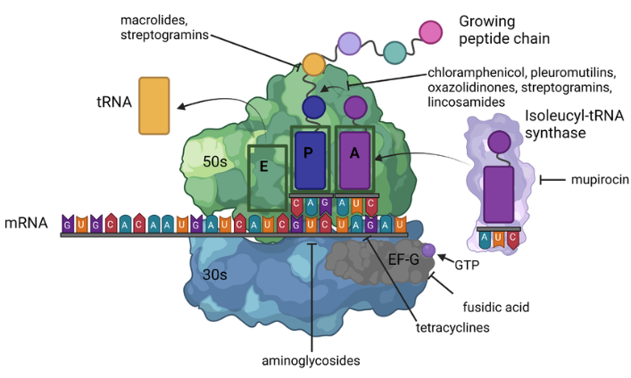

Tetracyclines, Tetracycline Derivatives, and Chloramphenicol
A Comprehensive Review for Clinical Practice
2026-02-02
Introduction & Learning Objectives
Learning Objectives
After this presentation, you will be able to:
- Describe the mechanism of action of tetracyclines
- Compare pharmacokinetic properties of different tetracycline generations
- Identify key clinical indications for each tetracycline
- Recognize important adverse effects and drug interactions
- Apply knowledge of newer derivatives (tigecycline, eravacycline, omadacycline)
- Select the appropriate tetracycline for specific clinical scenarios
Historical Overview
Discovery & Development Timeline
1948: Benjamin M. Duggar discovers chlortetracycline
- He isolated from Streptomyces aureofaciens at age 76!
- Trade name “Aureomycin” from aureus (golden)
| Era | Year | Agent | Significance |
|---|---|---|---|
| 1st Gen | 1948-1953 | Chlortetracycline, Oxytetracycline, Tetracycline | Natural products |
| 2nd Gen | 1967-1972 | Doxycycline, Minocycline | Improved PK |
| 3rd Gen | 2005-2018 | Tigecycline, Eravacycline, Omadacycline | Resistance-active |
The Rise of Resistance & Classification
Resistance emerged quickly:
- First resistance: 1953 (Shigella dysenteriae)
- Non-clinical uses (animal feed) accelerated spread
- Led to 33+ resistance genes (“tetracycline resistome”)
Classification by Half-life:
| Category | Half-life | Examples |
|---|---|---|
| Short-acting | 6-8 hours | Tetracycline, Oxytetracycline |
| Intermediate | 12 hours | Demeclocycline |
| Long-acting | 16-22 hours | Doxycycline, Minocycline |
| Very long-acting | 37-67 hours | Tigecycline |
Structure & Mechanism of Action
Core Structure
All tetracyclines share: Four-benzene ring structure (hydronaphthacene nucleus)
- Substitutions at C-5, C-6, C-7 determine properties

Cell Entry:
- Gram-negative: Mg²⁺-cation complex → OmpF/OmpC porins → accumulates in periplasm
- Gram-positive: Active transport through cytoplasmic membrane (ΔpH dependent)
Ribosomal Binding & Protein Synthesis Inhibition
Key Concept
Tetracyclines reversibly bind to the 30S ribosomal subunit → bacteriostatic…although clinical importance of bacteriostatic vs. cidal is debated. Free drug AUC/AUC is the PK/PD driver of activity- Killing (or growth suppression) depends on overall exposure, not peak concentration

What happens at the ribosome
- Tetracycline occupies the A (acceptor) site
- Blocks aminoacyl-tRNA binding
- Prevents peptide chain elongation → protein synthesis halts
Additional mechanisms (doxycycline):
- Binds 70S mitochondrial ribosomes → antiprotozoal activity
- Targets apicoplast ribosomes in Plasmodium → slow antimalarial action
Pharmacokinetics
Absorption: Key Differences
| Drug | Bioavailability | Food Effect | Time to Peak |
|---|---|---|---|
| Tetracycline | 77-88% | ↓50% | 2-4 hours |
| Doxycycline | ~100% | ↓<20% | 2-3 hours |
| Minocycline | ~100% | ↓<20% | 2 hours |
Clinical Pearl
Doxycycline can be taken with food to reduce GI upset without significantly affecting absorption!
The Critical Cation Interaction
Critical Drug Interaction
Divalent and trivalent cations reduce absorption by 50-90%
Problematic agents: Aluminum, magnesium, calcium (antacids), iron, zinc, multivitamins
Solution: Separate administration by 3 hours
Patient counseling:
- Take tetracycline 1 hour before OR 2 hours after meals
- Separate from antacids by 2-3 hours
- Dairy products (milk, yogurt, cheese) also chelate
Distribution & Elimination
Half-life comparison:
| Drug | Half-life | Protein Binding | Lipophilicity |
|---|---|---|---|
| Tetracycline | 7 hours | 24-65% | Baseline |
| Doxycycline | 12-16 hours | 82-93% | 5× baseline |
| Minocycline | 16-21 hours | 70-80% | 10× baseline |
| Tigecycline | 37-67 hours | 71-89% | Very high |
Tissue Penetration
Doxycycline achieves excellent levels in:
- Bronchial secretions, pleural fluid
- Sinus, middle ear secretions
- Bone, prostate, testes
- Urine concentrations 10× serum
Minocycline uniquely penetrates:
- CSF (11-57% of serum levels)
- Saliva and tears
- Sebum (explaining efficacy in acne)
Special Populations
Renal impairment:
- Tetracycline: Avoid (accumulates, worsens azotemia)
- Doxycycline: No adjustment needed (GI elimination)
- Minocycline: No adjustment needed
Hepatic impairment:
- All tetracyclines: Use with caution
- Tigecycline: Reduce dose in Child-Pugh C
Clinical Pearl
Doxycycline is the tetracycline of choice in renal failure!
Antimicrobial Spectrum
Gram-Positive Coverage
Generally susceptible:
- Streptococcus pneumoniae (resistance varies: 20-40%)
- Streptococcus pyogenes
- Many Enterococcus faecalis
- MRSA (community-acquired strains often susceptible)
- Listeria monocytogenes
- Nocardia, Actinomyces
Note
Newer tetracyclines (tigecycline, eravacycline, omadacycline) have enhanced gram-positive activity including VRE
Gram-Negative Coverage
Susceptible organisms:
- Haemophilus influenzae
- Brucella species
- Vibrio species (cholera)
- Yersinia pestis (plague)
- Francisella tularensis (tularemia)
- Pasteurella multocida (animal bites)
Limited or resistant:
- Pseudomonas aeruginosa - inherently resistant
- Proteus species - often resistant
- Enterobacterales - variable, increasing resistance
Atypical Pathogens
Clinical Pearl
Tetracyclines are first-line for many atypical pathogens!
Excellent activity against:
| Organism | Clinical Syndrome |
|---|---|
| Chlamydia spp. | STIs, pneumonia, psittacosis |
| Mycoplasma pneumoniae | Atypical pneumonia |
| Rickettsia spp. | Rocky Mountain spotted fever, typhus |
| Borrelia burgdorferi | Lyme disease |
| Coxiella burnetii | Q fever |
| Ehrlichia/Anaplasma | Ehrlichiosis/Anaplasmosis |
Anaerobes & Other Organisms
Anaerobic coverage:
- Moderate activity against many mouth anaerobes
- Bacteroides fragilis: variable (50-70% susceptible)
- Tigecycline: broader anaerobic coverage
Additional coverage:
- Treponema pallidum (syphilis - alternative to penicillin)
- Plasmodium spp. (malaria prophylaxis/treatment)
- Bacillus anthracis (anthrax)
- Actinomyces, Nocardia
Clinical Indications
Respiratory Tract Infections
Community-Acquired Pneumonia (CAP):
Guideline Recommendation
Doxycycline is recommended as an alternative to macrolides for outpatient CAP in patients with comorbidities
- Covers atypicals (M. pneumoniae, C. pneumoniae, Legionella)
- Alternative when macrolide resistance is a concern
- Dose: 100 mg BID × 5-7 days
Other respiratory uses:
- Acute exacerbations of COPD
- Psittacosis (C. psittaci)
Tick-Borne Diseases
Doxycycline is first-line for:
| Disease | Pathogen | Duration |
|---|---|---|
| Lyme disease (early) | B. burgdorferi | 10-14 days |
| Rocky Mountain Spotted Fever | R. rickettsii | 5-7 days |
| Ehrlichiosis | Ehrlichia spp. | 5-14 days |
| Anaplasmosis | A. phagocytophilum | 10-14 days |
Clinical Warning
For RMSF: Start doxycycline empirically - don’t wait for serologic confirmation! Delay increases mortality.
Sexually Transmitted Infections
| Infection | Doxycycline Regimen |
|---|---|
| Chlamydia | 100 mg BID × 7 days |
| Syphilis (penicillin allergy) | 100 mg BID × 14 days (early) or 28 days (late) |
| PID (with ceftriaxone + metronidazole) | 100 mg BID × 14 days |
| Epididymitis | 100 mg BID × 10 days |
| LGV | 100 mg BID × 21 days |
Emerging Use
Doxy-PEP: Post-exposure prophylaxis (200 mg within 72h) reduces STI incidence by 66% in high-risk populations
Skin & Soft Tissue Infections
Community-acquired MRSA SSTI:
- Doxycycline 100 mg BID or Minocycline 100 mg BID
- Duration: 5-10 days depending on severity
Acne vulgaris:
| Agent | Dose | Notes |
|---|---|---|
| Doxycycline | 40-100 mg daily | Lower doses for anti-inflammatory |
| Minocycline | 50-100 mg BID | Risk of pigmentation, lupus-like |
| Sarecycline | 60-150 mg daily | Narrow spectrum, fewer GI effects |
Infections Requiring Combination Therapy
Brucellosis:
- Doxycycline 100 mg BID × 6 weeks + Streptomycin (or Gentamicin) × 2-3 weeks
- OR Doxycycline + Rifampin × 6 weeks
Q Fever:
- Acute: Doxycycline 100 mg BID × 14 days
- Chronic/Endocarditis: Doxycycline + Hydroxychloroquine × 18-24 months
Anthrax (post-exposure):
- Doxycycline 100 mg BID × 60 days (with vaccine if available)
Other Important Indications
Malaria prophylaxis:
- Doxycycline 100 mg daily (start 1-2 days before, continue 4 weeks after)
- Alternative to mefloquine or atovaquone-proguanil
Cholera:
- Single dose doxycycline 300 mg reduces duration
Periodontitis:
- Sub-antimicrobial doxycycline (20 mg BID) as adjunct to scaling
SIADH:
- Demeclocycline 600-1200 mg/day (induces nephrogenic DI)
Adverse Effects
Gastrointestinal Effects
Most common adverse effects:
- Nausea, vomiting, diarrhea (dose-related)
- Esophageal irritation and ulceration
Esophagitis Prevention
- Take with full glass of water
- Remain upright for 30 minutes after dose
- Doxycycline hyclate > doxycycline monohydrate for this risk
Management strategies:
- Take with food (doxycycline, minocycline)
- Use enteric-coated formulations
- Consider dose reduction if tolerating lower doses
Photosensitivity
Clinical Warning
Photosensitivity is dose-related and occurs in up to 20% of patients!
Risk ranking:
- Highest: Demeclocycline > Doxycycline > Tetracycline
- Lowest: Minocycline (rare)
Patient counseling:
- Avoid prolonged sun exposure
- Use SPF 30+ sunscreen
- Wear protective clothing
- Reaction occurs within minutes to hours of UV exposure
Dental & Bone Effects
Contraindication
Avoid tetracyclines in pregnancy and children under 8 years (except for life-threatening infections like RMSF)
Dental effects:
- Permanent yellow-brown staining
- Enamel hypoplasia
- Risk greatest during tooth development (in utero through age 8)
Bone effects:
- Deposit in calcifying tissues
- Reversible decrease in bone growth rate in fetus/young children
- Does not affect already-formed adult bone
CNS Effects (Especially Minocycline)
Vestibular effects (minocycline):
- Dizziness, vertigo, ataxia
- Occurs in 30-90% of patients
- More common in women
- Usually reversible within 48-72 hours of stopping
Other CNS effects:
- Benign intracranial hypertension (pseudotumor cerebri)
- Headache, visual changes, papilledema
- Risk increased with concurrent vitamin A, retinoids
Hepatotoxicity
Tetracycline-specific:
- Dose-related (usually with >2 g/day IV)
- Microvesicular fatty liver
- Historically seen in pregnant women with pyelonephritis
- Rarely reported with modern dosing
Tigecycline:
- Elevated LFTs in 5% of patients
- Cases of hepatic failure reported
- Contributes to FDA warnings
Minocycline-Specific Effects
Unique adverse effects:
| Effect | Incidence | Characteristics |
|---|---|---|
| Blue-gray skin pigmentation | Rare | Sun-exposed areas, may be permanent |
| Drug-induced lupus | Rare | ANA positive, arthritis |
| Hypersensitivity syndrome | Rare | DRESS syndrome |
| Autoimmune hepatitis | Rare | Often with long-term use |
| Eosinophilic pneumonitis | Rare | Occurs early in treatment |
Note
Most minocycline-specific effects are associated with prolonged use (acne treatment)
Drug Interactions
Major Drug Interactions
| Interacting Drug | Effect | Management |
|---|---|---|
| Antacids, iron, calcium | ↓ Absorption 50-90% | Separate by 3 hours |
| Warfarin | ↑ INR | Monitor closely |
| Oral contraceptives | Potential ↓ efficacy | Use backup method |
| Isotretinoin | ↑ Intracranial pressure | Avoid combination |
| Methotrexate | ↑ MTX levels | Monitor toxicity |
| Digoxin | ↑ Digoxin levels (10%) | Monitor levels |
Practical Management
Clinical Pearl
When multiple interactions exist, consider alternative antibiotics rather than complex scheduling
Key counseling points:
- Take tetracyclines 1 hour before or 2 hours after antacids
- Separate from dairy products
- Women on OCs should use backup contraception
- Report signs of bleeding if on warfarin
- Never combine with isotretinoin
Resistance Mechanisms
Three Major Mechanisms
1. Efflux Pumps (most common):
- Tet(A), Tet(B), Tet(K), Tet(L), etc.
- Actively pump tetracycline out of cell
- Energy-dependent (proton motive force)
- Encoded on plasmids → easily transferable
2. Ribosomal Protection Proteins:
- Tet(M), Tet(O)
- GTPases that “rescue” ribosomes
- Release tetracycline from 30S binding site
- Dislodge drug without damaging ribosome
Resistance Mechanisms (continued)
3. Enzymatic Inactivation:
- Tet(X) - NADPH-dependent monooxygenase
- Inactivates tetracycline by adding hydroxyl group
- Rare but concerning (can affect tigecycline)
- Tet(X3), Tet(X4) emerging as threat
Current resistance landscape:
- 33+ resistance genes identified
- Often carried on mobile genetic elements
- Multiple mechanisms may coexist
How Newer Tetracyclines Overcome Resistance
| Agent | Overcomes Efflux | Overcomes Ribosomal Protection |
|---|---|---|
| Doxycycline | Partially | No |
| Minocycline | Partially | No |
| Tigecycline | Yes | Yes |
| Eravacycline | Yes | Yes |
| Omadacycline | Yes | Yes |
Key structural modifications:
- C-9 glycylamido group (tigecycline)
- Enhanced ribosomal binding affinity
- Steric hindrance prevents efflux pump recognition
Newer Tetracycline Derivatives
Tigecycline (Glycylcycline)
Key features:
- First glycylcycline (FDA approved 2005)
- IV only, 100 mg loading then 50 mg q12h
- Higher dose: 200 mg loading, then 100 mg daily (greater N&V)
- Broadest spectrum of tetracyclines
FDA-approved indications:
- Complicated skin/skin structure infections
- Complicated intra-abdominal infections
- Community-acquired bacterial pneumonia
FDA Black Box Warning
Increased mortality compared to other antibiotics in meta-analysis. Reserve for situations where alternatives are not suitable.
Tigecycline: Clinical Considerations
Advantages:
- Active against MRSA, VRE, ESBL-producers
- Excellent tissue penetration (Vd = 7-10 L/kg)
- Good anaerobic coverage
Limitations:
- Low serum concentrations → avoid for bacteremia
- No Pseudomonas activity
- High rate of nausea/vomiting (30%)- can be reduced by splitting doses (activity AUC/MIC driven, N&V is peak related)
- Increased mortality signal
When to consider:
- MDR intra-abdominal infections
- MDR skin infections when oral options inadequate
- Not for VAP, bloodstream infections, or diabetic foot infections
Eravacycline (Fluorocycline)
Key features:
- Fluorocycline class (FDA approved 2018)
- IV only: 1 mg/kg q12h
- 2-4× more potent than tigecycline in vitro
FDA-approved indication:
- Complicated intra-abdominal infections
Advantages over tigecycline:
- More potent against Enterobacterales
- Similar spectrum but better MICs
- Better tolerability (less nausea)
Omadacycline (Aminomethylcycline)
Key features:
- Aminomethylcycline class (FDA approved 2018)
- Both IV and oral formulations available
- Oral bioavailability: ~35%
FDA-approved indications:
- Community-acquired bacterial pneumonia
- Acute bacterial skin and skin structure infections
Clinical Pearl
Omadacycline is the only newer tetracycline with oral availability - allows IV-to-oral switch!
Omadacycline: Clinical Use
Dosing:
| Indication | Loading | Maintenance |
|---|---|---|
| CABP | 200 mg IV or 300 mg PO × 2 | 100 mg IV or 300 mg PO daily |
| ABSSSI | 200 mg IV or 450 mg PO | 100 mg IV or 300 mg PO daily |
Key advantages:
- Oral option for serious infections
- Activity against MRSA, atypicals
- Better tolerability than tigecycline
- No food effect on absorption (take on empty stomach)
Sarecycline (Narrow-Spectrum)
Unique positioning:
- FDA approved 2018 for acne vulgaris only
- Specifically designed narrow spectrum
- Less impact on gut flora than other tetracyclines
- Weight-based dosing (60-150 mg once daily)
Not indicated for infections!
- Lower activity against typical respiratory pathogens
- Designed to target Cutibacterium acnes
Comparing Newer Tetracyclines
| Feature | Tigecycline | Eravacycline | Omadacycline |
|---|---|---|---|
| Route | IV only | IV only | IV and PO |
| Approved uses | cSSSI, cIAI, CABP | cIAI | CABP, ABSSSI |
| Pseudomonas | No | No | No |
| Black box warning | Yes (mortality) | No | No |
| Dosing frequency | q12h | q12h | Daily |
| Main limitation | Low serum levels | Limited indications | Cost |
Chloramphenicol
Historical Context & Mechanism
History:
- Discovered 1947 from Streptomyces venezuelae
- First antibiotic to be manufactured synthetically (1949)
- Fell from favor due to aplastic anemia
Mechanism:
- Binds 50S ribosomal subunit (NOT 30S like tetracyclines)
- Inhibits peptidyl transferase activity
- Prevents peptide bond formation
- Bacteriostatic (bactericidal against some organisms)
Chloramphenicol: Spectrum & Uses
Broad spectrum coverage:
- Gram-positives (including many resistant organisms)
- Gram-negatives (including H. influenzae, N. meningitidis)
- Anaerobes
- Rickettsiae, spirochetes
Current uses:
- Rickettsial infections (when doxycycline contraindicated)
- Bacterial meningitis (resource-limited settings)
- Ophthalmic infections (topical)
- Alternative for serious infections in beta-lactam allergy
Chloramphenicol: Toxicity
Critical Toxicity
Aplastic anemia - idiosyncratic, not dose-related, often fatal (1 in 20,000-40,000)
Types of bone marrow toxicity:
| Type | Mechanism | Reversibility | Risk |
|---|---|---|---|
| Dose-related suppression | Mitochondrial inhibition | Reversible | Common |
| Aplastic anemia | Idiosyncratic | Usually fatal | Rare (1:20,000-40,000) |
Other toxicities:
- Gray baby syndrome: Cardiovascular collapse in neonates
- Due to immature glucuronidation
- Abdominal distension, cyanosis, shock
- Optic neuritis (prolonged use)
Practical Prescribing
Tetracycline Selection Algorithm
Is the patient pregnant or <8 years old?
│
├─► Yes: Avoid tetracyclines (except life-threatening RMSF)
│
└─► No: Continue ↓
│
Is renal function impaired?
│
├─► Yes: Use DOXYCYCLINE (no adjustment needed)
│
└─► No: Choose based on indication
│
├─► Atypicals/Tick-borne: Doxycycline
├─► CNS infection: Minocycline
├─► Acne: Doxycycline, Minocycline, or Sarecycline
└─► MDR GN/GN infections: Tigecycline or EravacyclineAvailable Formulations
| Drug | Formulations | Standard Dose |
|---|---|---|
| Doxycycline | PO (tabs, caps, syrup), IV | 100 mg q12h |
| Minocycline | PO, IV, topical | 100 mg q12h |
| Tigecycline | IV only | 50 mg q12h (after 100 mg load) |
| Eravacycline | IV only | 1 mg/kg q12h |
| Omadacycline | PO, IV | 300 mg PO or 100 mg IV daily |
| Sarecycline | PO only | 60-150 mg daily (weight-based) |
Key Counseling Points
For all tetracyclines:
- Avoid dairy and antacids (separate by 2-3 hours)
- Take with full glass of water, stay upright 30 minutes
- Use sun protection (especially doxycycline)
- Complete full course even if feeling better
For specific agents:
- Minocycline: Report dizziness, skin discoloration
- Doxycycline: Can take with food if nauseated
- Tetracycline: Must take on empty stomach
Summary
Key Takeaways (Part 1)
- Mechanism: Tetracyclines bind 30S ribosome, block protein synthesis (bacteriostatic)- activity is AUC/MIC driven, N&V with IV formulations is related to peak serum levels
- Doxycycline is the workhorse: Best oral bioavailability, can take with food, safe in renal impairment
- First-line for tick-borne diseases: Start empirically for suspected Rocky Mountain Spotted Fever - don’t wait for confirmation
- Important for STIs: Chlamydia, syphilis (alternative), growing role in Doxy-PEP
Key Takeaways (Part 2)
- Drug interactions are critical: Cations reduce absorption 50-90%, warfarin effect increased
- Avoid in pregnancy/children <8: Dental staining and bone effects
- Newer agents expand options: Tigecycline, eravacycline, omadacycline overcome resistance
- Tigecycline limitations: Not for bacteremia, black box mortality warning
Clinical Decision Making
Bottom Line
Doxycycline remains the most versatile tetracycline for clinical practice, with excellent oral bioavailability, broad spectrum, and unique indications for atypicals and tick-borne diseases. Reserve newer agents for MDR infections or when oral therapy with omadacycline is preferred.
Questions?
Further Reading & Resources
Key References:
- Chopra I, Roberts MC. Microbiol Mol Biol Rev 2001;65:232-260
- CDC STI Treatment Guidelines 2021
- IDSA Lyme Disease Guidelines 2020
- ATS/IDSA CAP Guidelines 2019
Clinical Pearls to Remember:
- Doxycycline = workhorse tetracycline
- Empiric RMSF treatment saves lives
- Separate from cations by 3 hours
- Safe in renal failure (doxycycline)
- Tigecycline: Not for bacteremia
Appendix: Reference Tables
Spectrum of Activity Summary
| Organism | TET | DOX | MIN | TIG | ERA | OMA |
|---|---|---|---|---|---|---|
| MSSA | S | S | S | S | S | S |
| MRSA | V | V | V | S | S | S |
| VRE | R | R | R | S | S | S |
| S. pneumoniae | V | V | V | S | S | S |
| Atypicals | S | S | S | S | S | S |
| Enterobacterales | V | V | V | S | S | V |
| P. aeruginosa | R | R | R | R | R | R |
| Anaerobes | V | V | V | S | S | V |
S = susceptible, V = variable, R = resistant
MIC Reference Values
| Organism | Doxycycline | Tigecycline |
|---|---|---|
| S. aureus (MSSA) | ≤0.25 | ≤0.12 |
| S. pneumoniae | ≤1 | ≤0.06 |
| E. coli | ≤4 | ≤0.5 |
| K. pneumoniae | ≤4 | ≤1 |
| Bacteroides fragilis | ≤4 | ≤4 |
Values in μg/mL; breakpoints per CLSI
Dosing Quick Reference
| Indication | Agent | Dose | Duration |
|---|---|---|---|
| CAP | Doxycycline | 100 mg BID | 5-7 days |
| Chlamydia | Doxycycline | 100 mg BID | 7 days |
| Lyme (early) | Doxycycline | 100 mg BID | 10-14 days |
| RMSF | Doxycycline | 100 mg BID | 5-7 days |
| MRSA SSTI | Doxycycline | 100 mg BID | 5-10 days |
| Malaria prophylaxis | Doxycycline | 100 mg daily | Duration of exposure + 4 weeks |
| cIAI | Tigecycline | 50 mg q12h* | 5-14 days |
| CABP | Omadacycline | 300 mg PO daily** | 5-7 days |
*After 100 mg loading dose; **After 300 mg × 2 loading